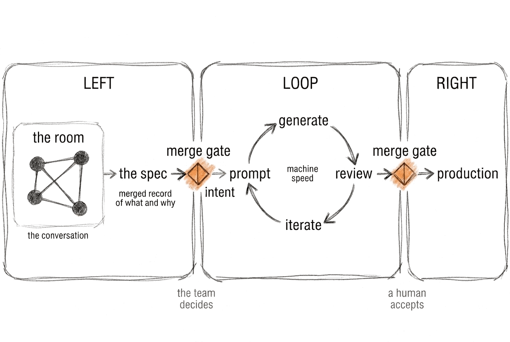

When AI writes the code, shared understanding becomes the scarce resource.
Working draft — feedback welcome
The boulder goes up faster. The constraint was never the pushing.
That division is the whole shape of the work now. The agent on implementation. The person on direction.
The team is the check on what the tool can't see.
Implementation got cheap. Discovering it was wrong didn't.
What that condition builds is more than shared understanding. It makes trust possible.
AI agreement is cheap. Human agreement from the right person is not.
We were still in the room together. We had stopped thinking together.
We used to confuse effort with value. AI lets us confuse output with value.
The minimum viable unit is three people.
The organization scales understanding by carrying patterns between rooms.
Without people saying what they actually think, nothing else holds.
Choose the forest. Even when the desert feels faster. Especially when it feels faster.
AI erodes the incidental friction that used to produce a shared picture of what to build and why as a byproduct of the work. That makes shared understanding the scarce resource, and constructive friction the mechanism that protects it. This book is the argument for why teams that keep that friction will outperform teams that optimize it away.

The draft is free and stays free. Buying it early is the most useful kind of support there is: it says the book is worth finishing while there's still time to shape what it becomes.
Take it to work:
The appendices freeze when the draft is printed; these two pages keep moving. The templates are CC BY 4.0, so you can use and adapt them at work without asking.
This book is not what it looks like.
It looks like a book about AI: about agents, specs, workflows, and the changing shape of software development. Those things are in here. But they're not what the book is about.
What the book is about started with a university friend and 18 PlayStation Move controllers.
The two of us were building a KubeCon demo for a talk called “18 Bluetooth Controllers Walk Into a Bar.” It was about observability and runtime configuration for JoustMania, an open-source party game where players jostle motion controllers until someone falls over. Complex execution: multiple Bluetooth adapters, battery-powered devices, sensors firing at 100Hz. When a player complains their controller “felt different,” how do you find out what happened at 2 a.m. at a convention? We wanted to figure out what was actually happening while it was still happening.
An interesting problem, and two people who knew the domain and cared about the project.
Because we had different schedules, we just started hacking on our own. We both made progress. We moved fast.
And we never planned it together.
The knowledge gap opened quietly. Decisions got made that the other person didn't know about. Assumptions turned out not to be shared. Work that should have built on itself didn't fit. Not because either of us was wrong, but because we never built the shared picture before we started building the thing.
The full draft continues in the PDF.
Each chapter answers the question the one before it raised. That chain is the book.